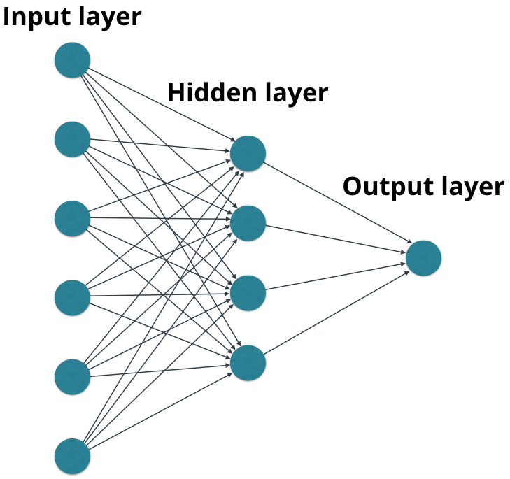

本文代码下载
Tensorflow 利用一个计算图（computer graph）把从输入到输出统合到一起，利用你定义的模型（比如linear regression 线性回归、logisticre gression 洛吉斯蒂回归 或者 convolutional neural network 卷积神经网络等等，当中有很多的模型的参数，参数的值待定，一开始一般为随机值），从输入计算出一个预测的输出，再用你的预测输出与真实结果进行比较，计算出一个损失函数（Loss Function）。
在数学上，我们可以用一个非常复杂的表达式直接写出从输入到输出以及从输入到损失函数的关系，从这个表达式中可以计算出损失函数对于模型中间参数的导数。
我们的目标是找出最好的模型，也就是找到那些模型参数，使得对于我们的输入的损失函数有最小值，这样我们的模型对于输入额预测也就最准。
利用梯度下降的方法（gradient descent），我们每次按照梯度下降的方向改变这些模型参数，直到梯度降低为 0（或者小于一定的阈值），模型收敛。
利用这个训练出来的模型，我们就可以对于新的输入进行预测了。
在实际每个参数的梯度计算中，我们利用的是链式法则，从后往前（也就是从损失函数到输入），逐步计算每一层节点的梯度。这个过程被称之为反向传播（back propagation）。
而从输入到输出的从前往后的计算过程，我们称之为前向传播（forward pass）。
由于 tensorflow 的代码结构非常复杂，为了厘清上述概念，我们利用 miniflow 来实现并分析每个节点是如何进行前向传播和反向传播的（forward pass，back propagation），同时他们是如何整合成一个计算图来完成整个模型的训练的。
这里有一份很简单的miniflow 代码，可以在我的 github 找到，
https://github.com/easyfly007/miniflow/
更为详细的实现可以参考这里：
http://neuralnetworksanddeeplearning.com/

import numpy as np
class Node(object):
def __init__(self, inbound_nodes = []):
self.inbound_nodes = inbound_nodes
self.outbound_nodes = []
for n in self.inbound_nodes:
n.outbound_nodes.append(self)
self.value = None
self.gradients = {}
def forward(self):
raise NotImplementedError
def backward(self):
raise NotImplementedError
class Input(Node): def __init__(self): Node.__init__(self) def forward(self, value = None): if value is not None: self.value = value
class Add(Node): def __init__(self, x_list): Node.__init__(self, x_list) def forward(self): self.value = 0.0 for node in self.inbound_nodes: self.value += node.value
class Linear(Node): def __init__(self, [inputs, weights, bias]): Node.__init__(self, [inputs, weights, bias]) def forward(self): x = np.array(self.inbound_nodes[0].value) w = np.array(self.inbound_nodes[1].value) b = np.array(self.inbound_nodes[2].value) self.value = np.dot(w, x) + b
def forward_pass(output_node, sorted_nodes): ''' perform a forward pass through a list of sorted nodes arguments: output_node: the output node of the graph (no outgoing edges) sorted_nodes: a topologically sorted list of nodes returns the output node's value ''' for n in sorted_nodes: n.forward() return output_node.value
class Sigmoid(Node): def __init__(self, x): Node.__init__(self, [x]) def _sigmoid(self, x): return 1.0/(1.0+ np.exp(-x)) def forward(self): x = self.inbound_nodes[0].value self.value = self._sigmoid(x)
def forward_pass(output_node, sorted_nodes):
"""
Performs a forward pass through a list of sorted nodes.
Arguments:
`output_node`: A node in the graph, should be the output node (have no outgoing edges).
`sorted_nodes`: A topologically sorted list of nodes.
Returns the output Node's value
"""
for n in sorted_nodes:
n.forward()
return output_node.value
def topological_sort(feed_dict):
"""
Sort the nodes in topological order using Kahn's Algorithm.
`feed_dict`: A dictionary where the key is a `Input` Node and the value is the respective value feed to that Node.
Returns a list of sorted nodes.
"""
input_nodes = [n for n in feed_dict.keys()]
G = {}
nodes = [n for n in input_nodes]
while len(nodes) > 0:
n = nodes.pop(0)
if n not in G:
G[n] = {'in': set(), 'out': set()}
for m in n.outbound_nodes:
if m not in G:
G[m] = {'in': set(), 'out': set()}
G[n]['out'].add(m)
G[m]['in'].add(n)
nodes.append(m)
L = []
S = set(input_nodes)
while len(S) > 0:
n = S.pop()
if isinstance(n, Input):
n.value = feed_dict[n]
L.append(n)
for m in n.outbound_nodes:
G[n]['out'].remove(m)
G[m]['in'].remove(n)
# if no other incoming edges add to S
if len(G[m]['in']) == 0:
S.add(m)
return L
x, y, z = Input(), Input(), Input()
f = Add((x, y, z))
feed_dict = {x: 4, y: 5, z: 10}
graph = topological_sort(feed_dict)
output = forward_pass(f, graph)
# should output 19
print("{} + {} + {} = {} (according to miniflow)".format(feed_dict[x], feed_dict[y], feed_dict[z], output))